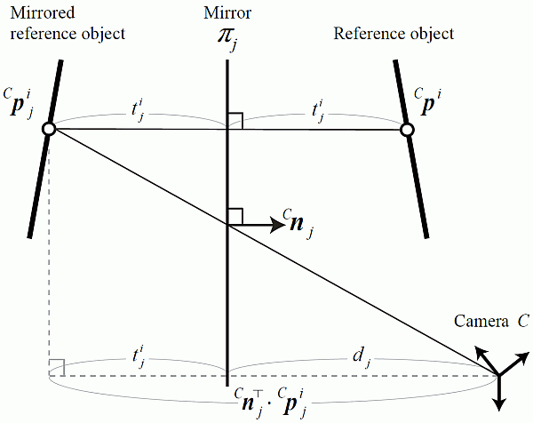

Introduction
This page provides an implementation of our mirror-based camera calibration algorithm presented as
K. Takahashi, S. Nobuhara and T. Matsuyama: A New Mirror-based Extrinsic Camera Calibration Using an Orthogonality Constraint, CVPR2012
and
K. Takahashi, S. Nobuhara and T. Matsuyama: Mirror-based Camera Pose Estimation Using an Orthogonality Constraint, IPSJ Transactions on Computer Vision and Applications, Vol.8, pp.11--19, 2016
- paper: CVPR, IPSJ Trans. on CVA
- movie: mp4
- bibtex:
@inproceedings{takahashi12new, title = {A New Mirror-based Extrinsic Camera Calibration Using an Orthogonality Constraint}, author = {Kosuke Takahashi and Shohei Nobuhara and Takashi Matsuyama}, booktitle = {Proc.\ of CVPR}, year = {2012}, } @article{takahashi2016mirror, title={Mirror-based Camera Pose Estimation Using an Orthogonality Constraint}, author={Kosuke Takahashi and Shohei Nobuhara and Takashi Matsuyama}, journal={IPSJ Transactions on Computer Vision and Applications}, volume={8}, number={ }, pages={11-19}, year={2016} }
The motivation of this project is to calibrate a camera w.r.t. a reference object which is not observable from the camera. This happens, for example, in display-camera systems such as digital signage, webcam attached to laptop PC, etc. Once obtained the mapping between the display pixel coordinate system and the camera coordinate system, it becomes possible to compute the gazing point (pixel) of a person in front of the display by estimating the gazing direction in the camera coordinate system. This scenario allows the person to move fre ely, while conventional methods typically restrict the head position to be fixed.
The key point to solve the problem is the use of mirrored images. Suppose we have a single static camera $$C$$ and a static reference object $$X$$ as shown below. The camera $$C$$ cannot observe the reference object $$X$$ directly. Instead, we use a mirror $$\pi$$ and let the camera $$C$$ observe the reference object $$X$$ through it. The goal of our mirror-based calibration is to estimate the relative posture $$R$$ and position $$T$$ of the camera $$C$$ against the reference object $$X$$ by observing three point s of $$X$$ via three mirrors $$\pi_j (j=1,2,3)$$ under different unknown positions and orientations.

Source code
License
This source code is provided under the BSD 3-Clause license.
Copyright (c) 2012, Kosuke Takahashi, Shohei Nobuhara and Takashi Matsuyama
All rights reserved.
Redistribution and use in source and binary forms, with or without
modification, are permitted provided that the following conditions are met:
* Redistributions of source code must retain the above copyright notice,
this list of conditions and the following disclaimer.
* Redistributions in binary form must reproduce the above copyright
notice, this list of conditions and the following disclaimer in the
documentation and/or other materials provided with the distribution.
* Neither the name of the Graduate School of Informatics, Kyoto
University, Japan nor the names of its contributors may be used to
endorse or promote products derived from this software without specific
prior written permission.
THIS SOFTWARE IS PROVIDED BY THE COPYRIGHT HOLDERS AND CONTRIBUTORS "AS IS"
AND ANY EXPRESS OR IMPLIED WARRANTIES, INCLUDING, BUT NOT LIMITED TO, THE
IMPLIED WARRANTIES OF MERCHANTABILITY AND FITNESS FOR A PARTICULAR PURPOSE
ARE DISCLAIMED. IN NO EVENT SHALL THE COPYRIGHT HOLDER OR CONTRIBUTORS BE
LIABLE FOR ANY DIRECT, INDIRECT, INCIDENTAL, SPECIAL, EXEMPLARY, OR
CONSEQUENTIAL DAMAGES (INCLUDING, BUT NOT LIMITED TO, PROCUREMENT OF
SUBSTITUTE GOODS OR SERVICES; LOSS OF USE, DATA, OR PROFITS; OR BUSINESS
INTERRUPTION) HOWEVER CAUSED AND ON ANY THEORY OF LIABILITY, WHETHER IN
CONTRACT, STRICT LIABILITY, OR TORT (INCLUDING NEGLIGENCE OR OTHERWISE)
ARISING IN ANY WAY OUT OF THE USE OF THIS SOFTWARE, EVEN IF ADVISED OF THE
POSSIBILITY OF SUCH DAMAGE.
Download links
If you use this software, please consider citing the aforementioned paper in any resulting publication.
- Matlab version with test data: tnm-matlab.zip (tested with Matlab 2011b and 2012a. Also compatible with GNU Octave v3.6 + Octave-Forge)
- OpenCV version with test data: tnm-opencv.zip (tested with Debian wheezy + libcv-dev package)
How to use the Matlab version with sample data
Usage
After unzipping the downloaded file, you will have the following files in a single directory named "tnm".
-
data/input{1,2,3}.png: Three input images. They are the original pictures WITH lens distortions. -
data/input{1,2,3}.txt: Three input data points extracted frominput{1,2,3}.png. The points are taken from undistorted images. -
camera.txt: The intrinsic parameter of the camera. -
model.txt: The reference object. -
demo.m: A demo program to run our method. -
tnm.m: An implementation of our calibration method. -
sub_p3p.m: A sub-function called fromtnm.mto solve P3P problem. -
sub_tnm_orth.m: A sub-function called fromtnm.m. -
sub_tnm_rt.m: A sub-function called fromtnm.m. -
sub_reproj.m: To calc reprojection error.
Start Matlab, and change the working directory to the "tnm" directory. Run demo.m and you should see the following outputs and a pop-up window that visualizes the results.
> demo.m
Average reprojection error by TNM : 0.353531 pixel.
==== Parameters by TNM ====
R =
0.9552 -0.0316 -0.2942
0.0262 0.9994 -0.0221
0.2947 0.0134 0.9555
T =
71.6716
84.3404
120.2696
n1 =
0.2679
0.0307
-0.9629
n2 =
0.4356
0.0844
-0.8962
n3 =
-0.0443
-0.0112
-0.9990
d1 =
386.2302
d2 =
355.0478
d3 =
404.7066
Brief descriptions of the code
tnm.m : top-level driver
The figure below illustrates the measurement model of our method.

In this figure, we use the following notations. Notice that $${}^Yx$$ denotes $$x$$ in $$Y$$ coordinate system.
- $$C$$ : camera.
- $$\pi_j (j=1,2,3)$$ : three mirrors.
- $${}^Cn_j (j=1,2,3)$$ : the normal vector of $$\pi_j$$.
- $$d_j (j=1,2,3)$$ : the distance from $$C$$ to $$\pi_j$$.
- $${}^Xp^i (i=1,2,3)$$ : three reference points in the reference object coordinate system.
- $${}^Cp^i (i=1,2,3)$$ : $${}^Xp^i$$ in the camera $$C$$ coordinate system.
- $${}^Cp^i_j (i,j=1,2,3)$$ : Reflection of $${}^Xp^i$$ by $$\pi_j$$ in the camera $$C$$ coordinate system.
- $$q^i_j (i,j=1,2,3)$$ : 2D projection of $${}^Cp^i_j$$ in the camera $$C$$ image screen.
The goal is to estimate the relative rotation $$R$$ and translation $$T$$ between the camera $$C$$ and the reference $$X$$ which satisfy
$${}^Cp^i = R \cdot {}^Xp^i + T (i=1,2,3) $$. (1)
by knowing $$q^i_j (i,j=1,2,3)$$, the projections of $${}^Xp^i$$ observed via three different mirrors $$\pi_j (j=1,2,3)$$ of unknown positions. The orientation and the position of t he mirrors (the distances from the camera to the mirrors) are also estimated as a result. So the input / output of the above-mentioned "tnm.m" can be expressed as follows.
- tnm.m
- Input $$q^i_j (i,j=1,2,3)$$ : 2D projections of three reference points observed via three mirrors $$\pi_j (j=1,2,3)$$.
- Output $$R, T$$ : The relative posture and position between the camera $$C$$ and the reference $$X$$.~ $${}^Cn_j, d_j (j=1,2,3)$$ : The orientations and distances of the three mirrors $$\pi_j (j=1,2,3)$$.
Sub-functions
Our mirror-based calibration method consists of the following three steps, and we provide implementations corresponding to them.
-
sub_p3p.m: P3P per mirrored image.- Input:
- $${}^Xp^i (i=1,2,3)$$ : Three reference points, and
- $$q^i (i)$$ : their projections observed via a mirror $$\pi$$.
- Output: Up to 4 possible solutions of $${}^Cp^i$$
- Input:
-
sub_tnm_orth.m: Unique solution selection using an orthogonality constraint.- Input: 64 sets of $${}^Cp^i_j (i,j=1,2,3)$$.
- Output: The set of $${}^Cp^i_j (i,j=1,2,3)$$ which follows the orthogonality constraint best.
-
sub_tnm_rt.m: Linear estimation of $$R$$ and $$T$$.- Input: $${}^Cp^i_j (i,j=1,2,3)$$.
- Output: $$R, T, n_j, d_j (j=1,2,3)$$.
And in addition, we use the following sub-function for evaluation purpose.
-
sub_reproj.m: Reprojection error evaluation- Input:
- $${}^Xp^i (i=1,\dots)$$ : Any number of reference points.
- $$q^i_j (i=1,\dots, j=1,2,3)$$ : The projections of the reference points via mirrors.
- $$R, T, n_j, d_j (j=1,2,3)$$ : Estimated parameters.
- Output: Average reprojection error.
- Input:
How to use the OpenCV version with sample data
Usage
After unzipping the downloaded file, you will have the following files in a single directory named ./tnm-opencv.
-
data/input{1,2,3}.png: Three input images. They are the original pictures WITH lens distortions. -
data/input{1,2,3}.txt: Three input data points extracted from input{1,2,3}.png. The points are taken from undistorted images. -
Makefile: makefile. -
demo.cc: A demo program to run our method. -
sub_solveP3P.h: A sub-function called from tnm.h to solve P3P problem. -
tnm.h: An implementation of our calibration method.
This code requires OpenCV 2.3. We used libcv-dev package in Debian wheezy. For Debian/Ubuntu, try
$ sudo apt-get -f install libcv-dev libcvaux-dev libhighgui-dev g++ make
to install requisite libraries and compilation tools, and then exec
$ make
to compile the code.
For Visual C++ on Windows, please simply import demo.cc, sub_solveP3P.h, and tnm.h into a new project, and compile it (you need to setup additional include path and libraries for Op
enCV, of course).
Once compiled, run the binary (named demo) with no args in the ./tnm-opencv directory.
$ ./demo
loading 'data/input1.txt' = [263.854279, 284.595978;
380.608337, 284.673645;
261.375946, 355.315582]
loading 'data/input2.txt' = [187.462204, 264.845764;
302.664276, 261.313538;
183.416656, 338.876984]
loading 'data/input3.txt' = [393.80719, 301.828278;
529.568542, 311.569794;
391.23999, 374.259766]
loading 'data/model.txt' = [0, 0, 0;
175, 0, 0;
0, 100, 0]
loading 'data/camera.txt' = [487.910797, 0, 324.31308;
0, 487.558441, 237.003937;
0, 0, 1]
Average reprojection error by TNM : 0.353531 pixels
==== Parameters by TNM ====
R = [0.9552278293542109, -0.0315692738655991, -0.2941822138995512;
0.02622804982091903, 0.9994120031779081, -0.02208477544627536;
0.294706436016986, 0.01338016634873504, 0.9554941589139341]
T = [71.67155976406129; 84.34036742140127; 120.2696306131992]
n1 = [0.2679446927390354; 0.03066392138399924; -0.9629461903753189]
n2 = [0.4356434955333516; 0.08437398428883026; -0.8961561111629551]
n3 = [-0.04427539436835728; -0.01119106464381498; -0.9989566805050478]
d1 = 386.23
d2 = 355.048
d3 = 404.707
This program automatically loads data from data/input{1,2,3}.txt, and then outputs the estimated parameters to stdout.
Brief descriptions of the code
The structure of the code is very straightforward. Please visit the main() function in demo.cc first. The flow of main() is:
- load data from files (
model.txt,input{1,2,3}.txt) byload()function defined indemo.cc. - run calibration by
tnm()function defined in tnm.h. What this function does inside is:- call
sub_solveP3P()defined insub_solveP3P.hfor each input data (= the Matlab function intnm-matlab/sub_p3p.m), - call
sub_tnm_orth()defined intnm.h(= the Matlab function intnm-matlab/sub_tnm_orth.m), and - call
sub_tnm_rt()defined intnm.h(= the Matlab function intnm-matlab/sub_tnm_rt.m).
- call
- run
sub_reproj()defined indemo.ccto evaluate the reprojection error (= the Matlab function intnm-matlab/sub_reproj.m).
So to re-use the code for your own project, copy tnm.h and sub_solveP3P.h, and then use tnm() for calibration. To understand how to prepare the data, please consult the load() f
unction in demo.cc.
How to use the code with your own data
To calibrate your own system, please follow the process below. In short, update data/model.txt and data/input{1,2,3}.txt, then run the program again.
- Suppose you have a reference object $$X$$ and a camera $$C$$.
- The intrinsic parameters of $$C$$ should be provided. You can use OpenCV to estimate them.
- Capture three images of $$X$$ as $$I_1, I_2, I_3$$ via mirrors $$\pi_1, \pi_2, \pi_3$$ under different poses.
- Detect three points of $$X$$ for each of the images ($$I_1, I_2, I_3$$).
- Here we assume that the images are rectified (undistorted) using the intrinsic parameters before the detection.
- If you used a chessboard pattern as $$X$$ and used OpenCV findChessboardCorners() to detect it in $$I_1, I_2, I_3$$ automatically, you need to flip the detection result because the detector does not account for the observation via mirror.
- Store the data into
data/model.txtanddata/input{1,2,3}.txt.-
data/model.txtis a line-oriented plain text file each of lines represents the 3D position of a reference point in $$X$$.
0.000000 0.000000 0.000000 175.000000 0.000000 0.000000 0.000000 100.000000 0.000000 -
-
data/input{1,2,3}.txtare also line-oriented plain text files, and each of lines represents the 2D projection of the corresponding 3D reference point indata/model.txt. For examp le, the first line below is the projection of the first reference point $$(0,0,0)$$ defined in the first line ofdata/model.txt.380.608337 284.673645 263.854279 284.595978 377.368225 350.688141 - Exec the demo program again, and you will get the result.